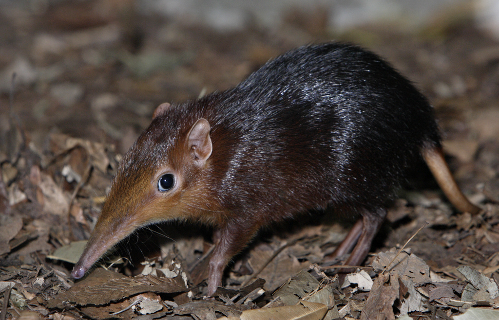

Rufous Elephant Shrew
Quite a ryjkish critter indeed

Elephant shrew in all its glory
A tribute to a cute critter
The rufous elephant shrew, rufous sengi or East African long-eared elephant-shrew (Elephantulus rufescens) is a species of elephant shrew in the family Macroscelididae. Found in Ethiopia, Kenya, Somalia, South Sudan, Tanzania and Uganda, its natural habitats are dry savanna and subtropical or tropical dry shrubland. Click to learn more boring facts about this fascinating animal.
More importantly, this species is a proud owner of an exceedingly fine proboscis, and also beadiness of its eyes is very high on a standardized beady-eyedness scale. For these important reasons, it is worth commemorating with this decorative altar shrine.